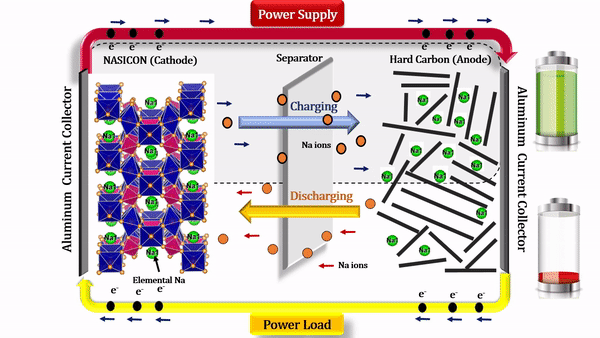

Remine India

“It’s not waste until it’s wasted.”
MARKET ANALYSIS:
- Research the waste management and lithium-ion battery recycling industry to identify potential
customers, competitors, and market trends. Look at the demand for recycled materials,
the prices of lithium-ion batteries and recycled materials, and the regulatory environment.
Sustainability strategy:
- As a startup in the waste management and lithium-ion battery recycling industry,
it's important to have a sustainability strategy. Consider incorporating sustainable practices into your operations,
such as using renewable energy sources or reducing waste.
Starting a startup in the waste management and lithium-ion battery recycling industry can be
a complex process, but with careful planning and execution, it can lead to a successful and sustainable business.